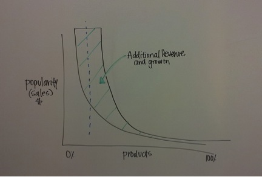

Guest Blog: What white goods teach us about open data
Often I’m asked about my passion for open and linked data… or better yet, when friends and colleagues ask what I do most days at work, I always come back to my “refrigerator story”. Five years ago my wife and I were searching for a black, French door, bottom-freezer refrigerator with an internal water dispenser. If those criteria weren’t enough, it had to fit into a slightly abnormal space in our 1950’s style kitchen.
At the time I believed that anything could be found on the web. It’s true for some things – if you know *exactly *what you’re looking for. But try querying “refrigerator black French door bottom-freezer internal water dispenser less than 68 inches” with your favorite search engine. Done? I’m guessing what was returned was probably not the result that would lead you to an easy purchasing decision. It certainly wasn’t in my case, and led to some real headaches that resulted in hours of web search and many unnecessary trips to a number of stores.
This frustration, plus the desire to lower the barriers to finding the right products has led the BBY Open Team within Best Buy in the direction of open product data. It’s the main driver of our latest effort to build a Product Insight Engine, codename: Metis. In December 2012, we published our entire active product catalogue and made it available for public consumption and linking.
A thriving environment of linked open product data can enable deep product discovery, which is good for both buyer and seller. Most of us only get a narrow view of the products available to us. Important details critical in making the best purchasing decisions can disappear because of outside influences, or artificial limitations placed on product data (marketing, search engines, etc.). There is a massive product landscape available to consumers today, and we are seeing just a small portion of it. The parts that we are seeing can be heavily weighted, obfuscated by unreadable markup, or marred with inconsistencies and errors.
To supporters of open data, open product data is music to your ears. But when asked by the business side of the house, I still struggle with the question: why? Let’s take a look at it from a seller’s perspective first. For many shop owners and retailers, the majority of their profit is made from a small minority of products. Every company is looking for growth; sell more products, increase margin and comps, plus limit the amount of product returns. These important tasks are becoming increasingly difficult in an age of razor thin margins, fierce competition, and hundreds of billons of dollars in product returns.

Illustration credit: Kristen Womack, https://twitter.com/kristen_womack
The good news is there is room to grow through exposing open product data on the web. The illustration above represents a seller’s product long tail, with the head representing the small amount of the most popular products. If we generously apply the Pareto principle, aka, the 80-20 rule, it still leaves a lengthy long tail—the large majority of a seller’s products are undiscovered and undersold. In a world of open product data, product catalogs would be published in a way that humans and machines can have access to every detail of a product or service. Product graphs could then be traversed and explored to discover new products or reveal those that have been hidden from view. All this exploration and discovery can grow the head and body of the seller’s product long tail, resulting in additional revenue and growth.
Of course we can’t forget about the consumer side of open data. When sellers publish product data in ways that are open, discoverable, and linkable, it enables technologies to come and make sense of all of it for the good of us customers. Sellers and product manufacturers can partner to link data sources together to provide the best, most consistent data to enable the correct product selection. I can think of a time in the near future when I may need to replace another household appliance. With a solid foundation of open product data I will be able to submit a complex product query (e.g., “show me all black Energy Star certified clothes washers with at least 3 cubic feet capacity that are less than 42 inches in height and are on sale”) through an application built on top of this rich web of open data, and get exactly the information I need to make the best purchasing decision for me.
This view of smarter commerce is well within our reach. As stewards of open data we can steer business, technology and consumers in the direction of a thriving open product marketplace where both buyers and sellers win.
Jay Myers is the Emerging Platforms Product Manager in the BBY Open group